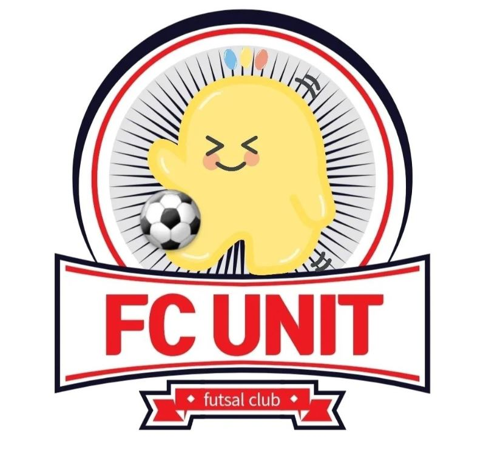

군대 가기 전 100kg에 육박하던 시절이 있었습니다....^^ 제 자신을 좋아하지 않다보니 남에게 제 자신을 소개하기 부끄럽고 자존감이 많이 낮아지더라구요 그 이후 운동을 통해 자기관리를 하면서 자존감을 찾아가고 있습니다.
축구
아킬레스

- 산업경영공학과 축구 소모임
- 18년도 1학기 공대스리가 3위
- 18년도 2학기 비룡체전 3위
- 22년도 주장
FC UNIT
- 대외활동 내 풋살팀
- 감독 : 추진력 좋은 풋살 매니아 대외활동 담당자님
- 주장 : 성시열
- 축구에 진심인 감독과 주장이 만나 직접 창단한 풋살팀
저는 축구에 매우매우 진심입니다. 축구 하는 것을 좋아하다 보니 축구팀도 두개나 들고 있고, 두 팀에서 모두 주장을 맡고 있습니다. 축구는 중학교 2학년 때부터 시작했어요. 골키퍼를 시작으로 해서 학급 반대항 축구대회를 했었는데, 그 이후로 더 잘하고 싶어서 매일 연습하면서 축구는 제가 진심인 분야 중 하나로 접어들었습니다. 이후로 고등학교를 거쳐 현재는 학과 축구팀에서 주장을 맡고 있고, 대외활동에서 풋살팀까지 하나 만들어서 창단멤버의 주장을 맡고 있습니다.
운동
| first day | 가슴 | 삼두 |
|---|---|---|
| second day | 등 | 이두 |
| third day | 하체 | 어깨 |
꾸준한 운동을 위해 교내 헬스장에서 운동을 하고 있습니다. 운동은 위 표와 같이 3분할로 순환하며 운동합니다.